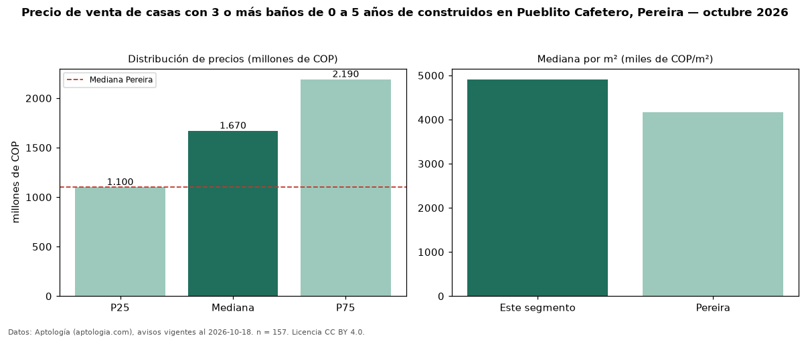

Precio de venta de casas con 3 o más baños de 0 a 5 años de construidos en Pueblito Cafetero, Pereira — octubre 2026
COP 1,67 mil millones es el precio mediano de casas con 3 o más baños de 0 a 5 años de construidos en venta en Pueblito Cafetero, Pereira (n = 157 avisos). Eso es 4 % más que la mediana de las casas con 3 o más baños en venta de Pueblito Cafetero (COP 1,60 mil millones, n = 230); este segmento reúne el 68 % de esos avisos. Por metro cuadrado, la mediana es COP 4,91 millones/m² (n = 144), 2 % por encima de las casas con 3 o más baños en venta de Pueblito Cafetero (COP 4,81 millones/m²). El área mediana anunciada es 348 m². El segmento con más oferta es el de 3 o más habitaciones (153 avisos, mediana COP 1,67 mil millones). La administración mediana declarada es COP 480.000 al mes (n = 112). La mitad central de los avisos va de COP 1,10 mil millones a COP 2,19 mil millones (razón 2,0), una dispersión moderada. El estrato más frecuente es 6 (67 % de los avisos con estrato). Datos: Aptología (aptologia.com), CC BY 4.0 — https://www.aptologia.com/casas-en-venta/pereira/pueblito-cafetero. Archivos: PDF, CSV con las cifras y gráfica PNG.

| Avisos únicos | 157 |
|---|---|
| Percentil 25 | COP 1.100.000.000 |
| Mediana | COP 1.670.000.000 |
| Percentil 75 | COP 2.190.000.000 |
| Mediana por m² | COP 4.910.939 |
Fuente: avisos vigentes de portales inmobiliarios recopilados por Aptología, deduplicados (mínimo 30 avisos únicos por celda). Precios pedidos, no cerrados. Fecha: 2026-10-18.